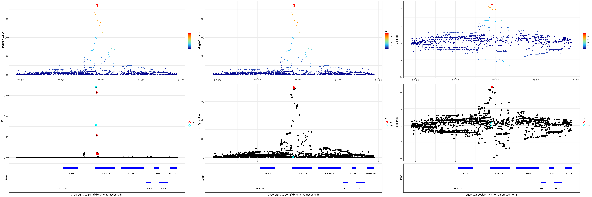
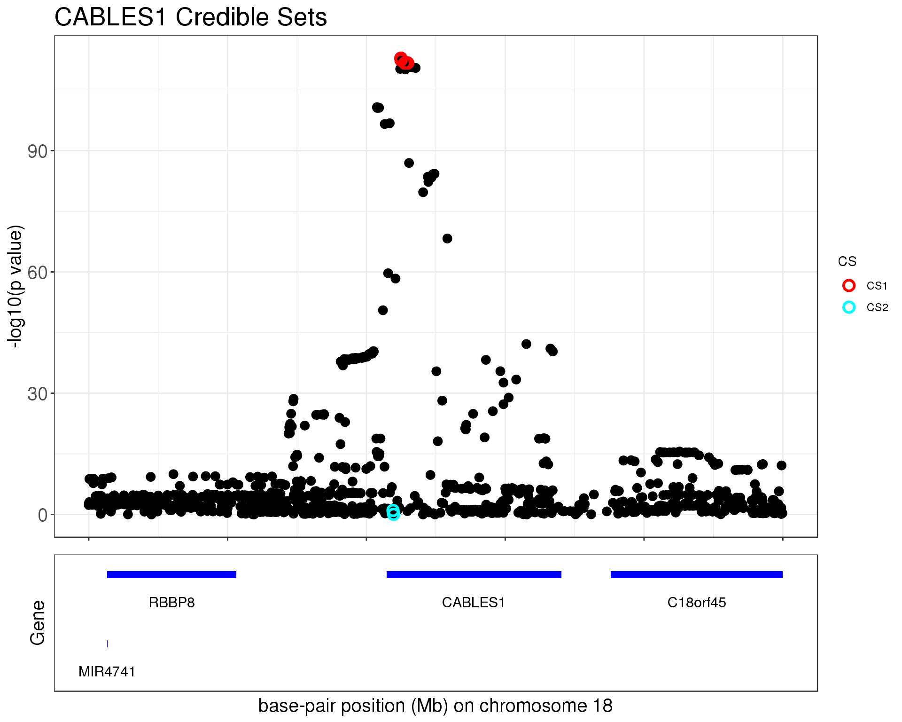
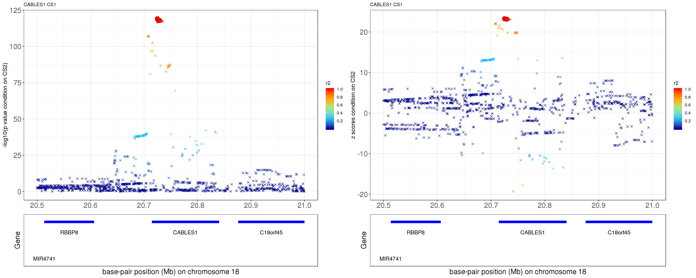
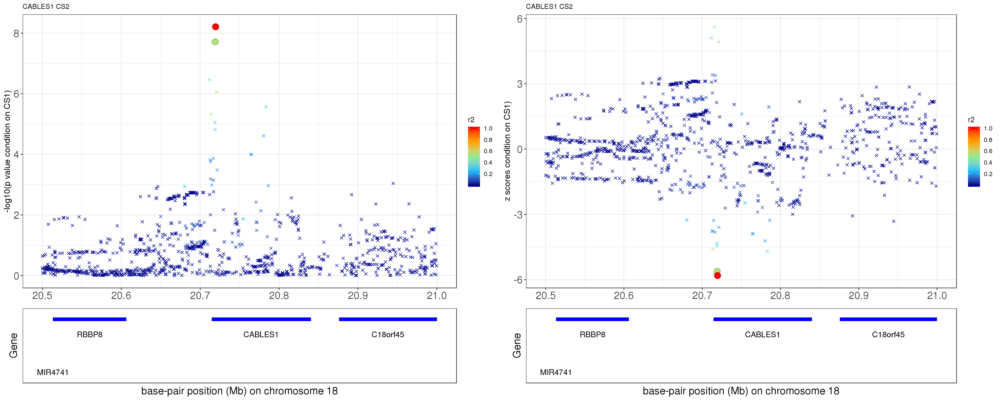
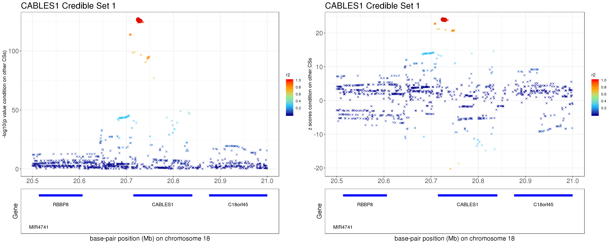

Fine-mapping Height CABLES1 – SuSiE check
Yuxin Zou
11/18/2019
Last updated: 2019-11-18
Checks: 7 0
Knit directory: finemap-uk-biobank/
This reproducible R Markdown analysis was created with workflowr (version 1.5.0). The Checks tab describes the reproducibility checks that were applied when the results were created. The Past versions tab lists the development history.
Great! Since the R Markdown file has been committed to the Git repository, you know the exact version of the code that produced these results.
Great job! The global environment was empty. Objects defined in the global environment can affect the analysis in your R Markdown file in unknown ways. For reproduciblity it’s best to always run the code in an empty environment.
The command set.seed(20191114) was run prior to running the code in the R Markdown file. Setting a seed ensures that any results that rely on randomness, e.g. subsampling or permutations, are reproducible.
Great job! Recording the operating system, R version, and package versions is critical for reproducibility.
Nice! There were no cached chunks for this analysis, so you can be confident that you successfully produced the results during this run.
Great job! Using relative paths to the files within your workflowr project makes it easier to run your code on other machines.
Great! You are using Git for version control. Tracking code development and connecting the code version to the results is critical for reproducibility. The version displayed above was the version of the Git repository at the time these results were generated.
Note that you need to be careful to ensure that all relevant files for the analysis have been committed to Git prior to generating the results (you can use wflow_publish or wflow_git_commit). workflowr only checks the R Markdown file, but you know if there are other scripts or data files that it depends on. Below is the status of the Git repository when the results were generated:
Untracked files:
Untracked: data/height.ACAN.XtX.Xty.rds
Untracked: data/height.ADAMTS10.XtX.Xty.rds
Untracked: data/height.ADAMTS17.XtX.Xty.rds
Untracked: data/height.ADAMTSL3.XtX.Xty.rds
Untracked: data/height.CABLES1.XtX.Xty.rds
Untracked: data/height.CDK6.XtX.Xty.rds
Untracked: data/height.DLEU1.XtX.Xty.rds
Untracked: data/height.EFEMP1.XtX.Xty.rds
Untracked: data/height.GDF5.XtX.Xty.rds
Untracked: data/height.GNA12.XtX.Xty.rds
Untracked: data/height.HHIP.XtX.Xty.rds
Untracked: data/height.HMGA2.XtX.Xty.rds
Untracked: data/height.KDM2A.XtX.Xty.rds
Untracked: data/height.LCORL.XtX.Xty.rds
Untracked: data/height.MTMR11.XtX.Xty.rds
Untracked: data/height.UQCC1.XtX.Xty.rds
Untracked: data/height.ZBTB38.0.01.simulation1000.rds
Untracked: data/height.ZBTB38.XtX.Xty.rds
Untracked: data/height.ZBTB38.neale.rds
Untracked: data/height.ZBTB38.removeCS1.XtX.Xty.rds
Untracked: data/height.ZBTB38.removeCS2.XtX.Xty.rds
Untracked: data/height.ZBTB38.susie.model.rds
Untracked: output/height.CABLES1.removeCS1.XtX.Xty.rds
Untracked: output/height.CABLES1.removeCS2.XtX.Xty.rds
Untracked: output/height.GDF5.removeCS1.XtX.Xty.rds
Untracked: output/height.ZBTB38.plink2.height.glm.linear
Untracked: output/height.ZBTB38.removeCS1.XtX.Xty.rds
Untracked: output/height.ZBTB38.removeCS2.XtX.Xty.rds
Untracked: output/height.ZBTB38.susie.model.rds
Unstaged changes:
Modified: analysis/_site.yml
Modified: analysis/finemap_height_GDF5_check.Rmd
Modified: analysis/finemap_height_ZBTB38_check.Rmd
Modified: analysis/finemap_height_larger_region.Rmd
Modified: scripts/plots.R
Modified: scripts/prepare.region.sh
Modified: scripts/prepare.susieinput.R
Note that any generated files, e.g. HTML, png, CSS, etc., are not included in this status report because it is ok for generated content to have uncommitted changes.
These are the previous versions of the R Markdown and HTML files. If you’ve configured a remote Git repository (see ?wflow_git_remote), click on the hyperlinks in the table below to view them.
| File | Version | Author | Date | Message |
|---|---|---|---|---|
| Rmd | d9848c8 | zouyuxin | 2019-11-19 | wflow_publish(“analysis/finemap_height_CABLES1_check.Rmd”) |
| html | ac423f0 | zouyuxin | 2019-11-19 | Build site. |
| Rmd | 559060a | zouyuxin | 2019-11-19 | wflow_publish(“analysis/finemap_height_CABLES1_check.Rmd”) |
| html | 9e4fee7 | zouyuxin | 2019-11-19 | Build site. |
| Rmd | 45127db | zouyuxin | 2019-11-19 | wflow_publish(“analysis/finemap_height_CABLES1_check.Rmd”) |
| html | 3db8ace | zouyuxin | 2019-11-18 | Build site. |
| Rmd | a056f42 | zouyuxin | 2019-11-18 | wflow_publish(“analysis/finemap_height_CABLES1_check.Rmd”) |
We perform some check for the SuSiE result on region around CABLES1
Load pacakges:
library(readr)
library(dplyr)
library(gridExtra)
library(susieR)Load plotting functions:
knitr::read_chunk("scripts/plots.R")library(ggplot2)
#' plot gene name annotations
#' @param dat a matrix of gene names with 'start' and 'end' base-pair position
#' @param xrange range of x axis, base-pair position
plot_geneName = function(dat, xrange, chr){
ngene = 2:nrow(dat)
line = 1
dat$lines = NA
dat$lines[1] = 1
gene.end = dat[1, 'end']
while(length(ngene) != 0){
id = which(dat[ngene, 'start'] > gene.end + 0.02)[1]
if(!is.na(id)){
dat$lines[ngene[id]] = line
gene.end = dat[ngene[id],'end']
ngene = ngene[-id]
}else{
line = line + 1
dat$lines[ngene[1]] = line
gene.end = dat[ngene[1],'end']
ngene = ngene[-1]
}
}
dat$start = pmax(dat$start, xrange[1])
dat$end = pmin(dat$end, xrange[2])
dat$mean = rowMeans(dat[,c('start', 'end')])
pl = ggplot(dat, aes(xmin = xrange[1], xmax = xrange[2])) + xlim(xrange[1], xrange[2]) + ylim(min(-dat$lines-0.6), -0.8) +
geom_rect(aes(xmin = start, xmax = end, ymin = -lines-0.05, ymax = -lines+0.05), fill='blue') +
geom_text(aes(x = mean, y=-lines-0.4, label=geneName), size=4) +
xlab(paste0('base-pair position (Mb) on chromosome ', chr)) + ylab('Gene') +
theme_bw() + theme(axis.text.x=element_blank(),
axis.ticks = element_blank(),
axis.text.y=element_blank(),
axis.title = element_text(size=15),
plot.title=element_text(size=11),
panel.grid.major = element_blank(),
panel.grid.minor = element_blank())
pl
}
discrete_gradient_pal <- function(colours, bins = 5) {
ramp <- scales::colour_ramp(colours)
function(x) {
if (length(x) == 0) return(character())
i <- floor(x * bins)
i <- ifelse(i > bins-1, bins-1, i)
ramp(i/(bins-1))
}
}
scale_colour_discrete_gradient <- function(..., colours, bins = 5, na.value = "grey50", guide = "colourbar", aesthetics = "colour", colors) {
colours <- if (missing(colours))
colors
else colours
continuous_scale(
aesthetics,
"discrete_gradient",
discrete_gradient_pal(colours, bins),
na.value = na.value,
guide = guide,
...
)
}
#' Locuszoom plot
#' @param z a vector of z scores with SNP names
#' @param pos base-pair positions
#' @param gene.pos.map a matrix of gene names with 'start' and 'end' base-pair position
#' @param z.ref.name the reference SNP
#' @param ld correlations between teh reference SNP and the rests
#' @param title title of the plot
#' @param title.size the size of the title
#' @param true the true value
#' @param y.height height of -log10(p) plot and height of the gene name annotation plot
#' @param y.lim range of y axis
locus.zoom = function(z, pos, chr, gene.pos.map=NULL, z.ref.name=NULL, ld=NULL,
title = NULL, title.size = 10, true = NULL,
y.height=c(5,1.5), y.lim=NULL, y.type='logp',xrange=NULL){
if(is.null(xrange)){
xrange = c(min(pos), max(pos))
}
tmp = data.frame(POS = pos, p = -(pnorm(-abs(z), log.p = T) + log(2))/log(10), z = z)
if(!is.null(ld) && !is.null(z.ref.name)){
tmp$ref = names(z) == z.ref.name
tmp$r2 = ld^2
if(y.type == 'logp'){
pl_zoom = ggplot(tmp, aes(x = POS, y = p, shape = ref, size=ref, color=r2)) + geom_point() +
ylab("-log10(p value)") + ggtitle(title) + xlim(xrange[1], xrange[2]) +
scale_color_gradientn(colors = c("darkblue", "deepskyblue", "lightgreen", "orange", "red"),
values = seq(0,1,0.2), breaks=seq(0,1,0.2)) +
# scale_colour_discrete_gradient(
# colours = c("darkblue", "deepskyblue", "lightgreen", "orange", "red"),
# limits = c(0, 1.01),
# breaks = c(0,0.2,0.4,0.6,0.8,1),
# guide = guide_colourbar(nbin = 100, raster = FALSE, frame.colour = "black", ticks.colour = NA)
# ) +
scale_shape_manual(values=c(20, 18), guide=FALSE) + scale_size_manual(values=c(2,5), guide=FALSE) +
theme_bw() + theme(axis.title.x=element_blank(),
axis.title.y = element_text(size=15),axis.text = element_text(size=15),
plot.title = element_text(size=title.size))
}else if(y.type == 'z'){
pl_zoom = ggplot(tmp, aes(x = POS, y = z, shape = ref, size=ref, color=r2)) + geom_point() +
ylab("z score") + ggtitle(title) + xlim(xrange[1], xrange[2]) +
scale_color_gradientn(colors = c("darkblue", "deepskyblue", "lightgreen", "orange", "red"),
values = seq(0,1,0.2), breaks=seq(0,1,0.2)) +
# scale_colour_discrete_gradient(
# colours = c("darkblue", "deepskyblue", "lightgreen", "orange", "red"),
# limits = c(0, 1.01),
# breaks = c(0,0.2,0.4,0.6,0.8,1),
# guide = guide_colourbar(nbin = 100, raster = FALSE, frame.colour = "black", ticks.colour = NA)
# ) +
scale_shape_manual(values=c(20, 18), guide=FALSE) + scale_size_manual(values=c(2,5), guide=FALSE) +
theme_bw() + theme(axis.title.x=element_blank(),
axis.title.y = element_text(size=15),axis.text = element_text(size=15),
plot.title = element_text(size=title.size))
}
}else{
if(y.type == 'logp'){
pl_zoom = ggplot(tmp, aes(x = POS, y = p)) + geom_point(color = 'darkblue') +
ylab("-log10(p value)") + ggtitle(title) + xlim(xrange[1], xrange[2]) +
theme_bw() + theme(axis.title.x=element_blank(),
plot.title = element_text(size=title.size))
}else if(y.type == 'z'){
pl_zoom = ggplot(tmp, aes(x = POS, y = z)) + geom_point(color = 'darkblue') +
ylab("z scores") + ggtitle(title) + xlim(xrange[1], xrange[2]) +
theme_bw() + theme(axis.title.x=element_blank(),
plot.title = element_text(size=title.size))
}
}
if(!is.null(y.lim)){
pl_zoom = pl_zoom + ylim(y.lim[1], y.lim[2])
}
# pl_zoom = pl_zoom + geom_hline(yintercept=-log10(5e-08), linetype='dashed', color = 'red')
if(!is.null(true)){
tmp.true = data.frame(POS = which(true!=0), p = tmp$p[which(true!=0)],
ref = (names(z) == z.ref.name)[which(true!=0)],
label = paste0('SNP',1:length(which(true!=0))))
pl_zoom = pl_zoom + geom_point(data=tmp.true, aes(x=POS, y=p),
color='red', show.legend = FALSE, shape=1, stroke = 1) +
geom_text(data=tmp.true, aes(x = POS-30, y=p+1, label=label), size=3, color='red')
}
if(!is.null(gene.pos.map)){
pl_gene = plot_geneName(gene.pos.map, xrange = xrange, chr=chr)
g = egg::ggarrange(pl_zoom, pl_gene, nrow=2, heights = y.height, draw=FALSE)
}else{
g = pl_zoom
}
g
}
#' SuSiE plot with Locuszoom plot
#' @param z a vector of z scores with SNP names
#' @param model the fitted SuSiE model
#' @param pos base-pair positions
#' @param gene.pos.map a matrix of gene names with 'start' and 'end' base-pair position
#' @param z.ref.name the reference SNP
#' @param ld correlations between teh reference SNP and the rests
#' @param title title of the plot
#' @param title.size the size of the title
#' @param true the true value
#' @param plot.locuszoom whether to plot locuszoom plot
#' @param y.lim range of y axis
#' @param y.susie the y axis of the SuSiE plot, 'PIP' or 'p' or 'z', 'p' refers to -log10(p)
susie_plot_locuszoom = function(z, model, pos, chr, gene.pos.map = NULL, z.ref.name, ld,
title = NULL, title.size = 10, true = NULL,
plot.locuszoom = TRUE, y.lim=NULL, y.susie='PIP', xrange=NULL){
if(is.null(xrange)){
xrange = c(min(pos), max(pos))
}
if(plot.locuszoom){
if(y.susie == 'z'){
y.type = 'z'
}else{
y.type = 'logp'
}
pl_zoom = locus.zoom(z, pos = pos, chr = chr, ld=ld, z.ref.name = z.ref.name, title = title, title.size = title.size, y.lim=y.lim, y.type=y.type, xrange=xrange)
}
pip = model$pip
tmp = data.frame(POS = pos, PIP = pip, p = -(pnorm(-abs(z), log.p = T) + log(2))/log(10), z = z)
if(y.susie == 'PIP'){
pl_susie = ggplot(tmp, aes(x = POS, y = PIP)) + geom_point(show.legend = FALSE, size=3) +
xlim(xrange[1], xrange[2]) +
theme_bw() + theme(axis.title.x=element_blank(), axis.text.x=element_blank(),axis.text = element_text(size=15),
axis.title.y = element_text(size=15))
if(!plot.locuszoom){
pl_susie = pl_susie + ggtitle(title) + theme(plot.title = element_text(size=title.size))
}
}else if(y.susie == 'p'){
pl_susie = ggplot(tmp, aes(x = POS, y = p)) + geom_point(show.legend = FALSE, size=3) +
ylab("-log10(p value)") + xlim(xrange[1], xrange[2]) +
theme_bw() + theme(axis.title.x=element_blank(), axis.text.x=element_blank(),axis.text = element_text(size=15),
axis.title.y = element_text(size=15))
if(!plot.locuszoom){
pl_susie = pl_susie + ggtitle(title) + theme(plot.title = element_text(size=title.size))
# pl_susie = pl_susie + geom_hline(yintercept=-log10(5e-08), linetype='dashed', color = 'red')
}
}else if(y.susie == 'z'){
pl_susie = ggplot(tmp, aes(x = POS, y = z)) + geom_point(show.legend = FALSE, size=3) +
ylab("z scores") + xlim(xrange[1], xrange[2]) +
theme_bw() + theme(axis.title.x=element_blank(), axis.text.x=element_blank(),axis.text = element_text(size=15),
axis.title.y = element_text(size=15))
if(!plot.locuszoom){
pl_susie = pl_susie + ggtitle(title) + theme(plot.title = element_text(size=title.size))
}
}
if(!is.null(true)){
tmp.true = data.frame(POS = pos[which(true!=0)], PIP = pip[which(true!=0)])
pl_susie = pl_susie + geom_point(data=tmp.true, aes(x=POS, y=PIP),
color='red', size=3, show.legend = FALSE)
}
model.cs = model$sets$cs
if(!is.null(model.cs)){
tmp$CS = numeric(length(z))
for(i in 1:length(model.cs)){
tmp$CS[model.cs[[i]]] = gsub('L', 'CS', names(model.cs)[i])
}
tmp.cs = tmp[unlist(model.cs),]
tmp.cs$CS = factor(tmp.cs$CS)
levels(tmp.cs$CS) = paste0('CS', 1:length(model.cs))
colors = c('red', 'cyan', 'green', 'orange', 'dodgerblue', 'violet', 'gold',
'#FF00FF', 'forestgreen', '#7A68A6')
if(y.susie == 'PIP'){
pl_susie = pl_susie + geom_point(data=tmp.cs, aes(x=POS, y=PIP, color=CS),
size=3, shape=1, stroke = 2) +
scale_color_manual(values=colors)
}else if(y.susie == 'p'){
pl_susie = pl_susie + geom_point(data=tmp.cs, aes(x=POS, y=p, color=CS),
shape=1, size=3, stroke=1.5) +
scale_color_manual(values=colors)
}else if(y.susie == 'z'){
pl_susie = pl_susie + geom_point(data=tmp.cs, aes(x=POS, y=z, color=CS),
shape=1, size=3, stroke=1.5) +
scale_color_manual(values=colors)
}
}
if(!is.null(gene.pos.map)){
pl_gene = plot_geneName(gene.pos.map, xrange = xrange, chr=chr)
if(plot.locuszoom){
g = egg::ggarrange(pl_zoom, pl_susie, pl_gene, nrow=3, heights = c(4,4,1.5), draw=FALSE)
}else{
g = egg::ggarrange(pl_susie, pl_gene, nrow=2, heights = c(5.5,1.5), draw=FALSE)
}
}else{
if(plot.locuszoom){
g = egg::ggarrange(pl_zoom, pl_susie, nrow=2, heights = c(4,4), draw=FALSE)
}else{
g = pl_susie
}
}
g
}locus.zoom.cs = function(z, cs, pos, chr, gene.pos.map=NULL, z.ref.name=NULL, ld=NULL, title = NULL, title.size = 10, xrange = NULL, y.lab='-log10(p value)', y.type = 'logp'){
if(is.null(xrange)){
xrange = c(min(pos), max(pos))
}
tmp = data.frame(POS = pos, log10p = -(pnorm(-abs(z), log.p = T) + log(2))/log(10), z = z)
tmp$ref = names(z) == z.ref.name
tmp$r2 = ld^2
tmp$CS = rep(4, length(z))
tmp$CS[cs] = 16
tmp$CS = as.factor(tmp$CS)
if(y.type == 'logp'){
pl_zoom = ggplot(tmp, aes(x = POS, y = log10p, shape = CS, color = r2, size=CS)) +
geom_point() + ylab(y.lab)
}else if(y.type == 'z'){
pl_zoom = ggplot(tmp, aes(x = POS, y = z, shape = CS, color = r2, size=CS)) +
geom_point() + ylab(y.lab)
}
pl_zoom = pl_zoom + scale_color_gradientn(colors = c("darkblue", "deepskyblue", "lightgreen", "orange", "red"),
values = seq(0,1,0.2), breaks=seq(0,1,0.2)) +
# scale_colour_discrete_gradient(
# colours = c("darkblue", "deepskyblue", "lightgreen", "orange", "red"),
# limits = c(0, 1.01),
# breaks = c(0,0.2,0.4,0.6,0.8,1),
# guide = guide_colourbar(nbin = 100, raster = FALSE, frame.colour = "black", ticks.colour = NA)) +
scale_shape_manual(values = c(4, 19), guide=FALSE) +
scale_size_manual(values=c(1.5,4), guide=FALSE) +
ggtitle(title) +
theme_bw() + theme(axis.title.x=element_blank(), axis.text=element_text(size=15),
axis.title.y=element_text(size=12),
plot.title = element_text(size=title.size))
tmp.sub = tmp[cs,]
if(y.type == 'logp'){
pl_zoom = pl_zoom + geom_point(data = tmp.sub, aes(x=POS, y=log10p), shape=1, size=4, color='black', stroke=0.1)
}else if(y.type == 'z'){
pl_zoom = pl_zoom + geom_point(data = tmp.sub, aes(x=POS, y=z), shape=1, size=4, color='black', stroke=0.1)
}
if(!is.null(xrange)){
pl_zoom = pl_zoom + xlim(xrange[1], xrange[2])
}
pl_gene = plot_geneName(gene.pos.map, xrange = xrange, chr=chr)
g = egg::ggarrange(pl_zoom, pl_gene, nrow=2, heights = c(5.5,1.5), draw=FALSE)
g
}Get summary statistics:
ss.dat = readRDS('data/height.CABLES1.XtX.Xty.rds')
betas = as.vector(ss.dat$Xty/diag(ss.dat$XtX))
rss = c(ss.dat$yty) - betas * as.vector(ss.dat$Xty)
se = sqrt(rss/((ss.dat$n-1)*diag(ss.dat$XtX)))
z = betas/se
pval = 2*pnorm(-abs(z))
R = as.matrix(t(ss.dat$XtX * (1/sqrt(diag(ss.dat$XtX)))) * (1/ sqrt(diag(ss.dat$XtX))))
names(z) = rownames(R)Get gene data:
genes <- read_delim("data/seq_gene.md.gz",delim = "\t",quote = "")
class(genes) <- "data.frame"
genes <- subset(genes,
group_label == "GRCh37.p5-Primary Assembly" &
feature_type == "GENE")
start.pos <- min(ss.dat$pos$POS)
stop.pos <- max(ss.dat$pos$POS)
plot.genes <- subset(genes,
chromosome == 18 &
((chr_start > start.pos & chr_start < stop.pos) |
(chr_stop > start.pos & chr_start < stop.pos)) & feature_type == 'GENE')
gene.pos.map = plot.genes %>% select(feature_name, chr_start, chr_stop)
colnames(gene.pos.map) = c('geneName', 'start', 'end')
gene.pos.map = as.data.frame(gene.pos.map)
gene.pos.map = gene.pos.map %>% mutate(start = start/1e6, end = end/1e6)
gene.pos.map = gene.pos.map[-c(1),]SuSiE bhat result: the top panel shows the r2 with respect to the top hit (diamond shape); the lower panel plots the credible sets in PIP, -log10(p value) and z scores.
mod_bhat = susie_bhat(bhat = betas, shat = se, R = R, n = ss.dat$n, var_y = as.numeric(ss.dat$yty/(ss.dat$n-1)), track_fit=TRUE, standardize=FALSE)
z.max = which.max(abs(z))
p1 = susie_plot_locuszoom(z, mod_bhat, pos = ss.dat$pos$POS/1e6, chr=18, gene.pos.map = gene.pos.map, ld = R[z.max,], z.ref.name = names(z.max))
p2 = susie_plot_locuszoom(z, mod_bhat, pos = ss.dat$pos$POS/1e6, chr=18, gene.pos.map = gene.pos.map, ld = R[z.max,], z.ref.name = names(z.max), y.susie ='p')
p3 = susie_plot_locuszoom(z, mod_bhat, pos = ss.dat$pos$POS/1e6, chr=18, gene.pos.map = gene.pos.map, ld = R[z.max,], z.ref.name = names(z.max), y.susie ='z')
grid.arrange(p1, p2, p3, ncol=3)
| Version | Author | Date |
|---|---|---|
| 9e4fee7 | zouyuxin | 2019-11-19 |
For 1Mb region about CABLES1, SuSiE found 2 CSs. The SNP with the strongest marginal p value in CS1 is rs7235010 (p = 1.3394e-113). For CS2, the SNP with the strongest marginal p value is rs12327253 (p = 0.1015).
The correlation between rs2871960 and rs11919556 is 0.3082546. The average correlation between SNPs in CS1 and CS2 is
round(mean(abs(R[mod_bhat$sets$cs$L1, mod_bhat$sets$cs$L2])), 4)[1] 0.2764Zoom in plot:
p1 = susie_plot_locuszoom(z, mod_bhat, pos = ss.dat$pos$POS/1e6, chr=18, gene.pos.map = gene.pos.map, z.ref.name = names(z), ld = R[z.max,], title='CABLES1 Credible Sets', plot.locuszoom = FALSE, y.susie = 'p', xrange=c(20.5, 21), title.size = 20)
p1
| Version | Author | Date |
|---|---|---|
| 9e4fee7 | zouyuxin | 2019-11-19 |
CS 1
- Option 1. We remove effect of top SNP in CS 2.
library(data.table)
library(readr)
library(Matrix)
geno.file = 'height.CABLES1.raw.gz'
cat("Reading genotype data.\n")
geno <- fread(geno.file,sep = "\t",header = TRUE,stringsAsFactors = FALSE)
class(geno) <- "data.frame"
# Extract the genotypes.
X <- as(as.matrix(geno[-(1:6)]),'dgCMatrix')
pheno.file <- "/gpfs/data/stephens-lab/finemap-uk-biobank/data/raw/height.csv.gz"
out.pheno.file <- "pheno.height.txt"
out.covar.file <- "covar.removeCS2.height.txt"
# LOAD PHENOTYPE and COVARIATES DATA
# -------------------
# Read the phenotype data from the CSV file.
cat("Reading phenotype data.\n")
pheno <- suppressMessages(read_csv(pheno.file))
class(pheno) <- "data.frame"
pheno$sex = factor(pheno$sex)
pheno$assessment_centre = factor(pheno$assessment_centre)
pheno$genotype_measurement_batch = factor(pheno$genotype_measurement_batch)
pheno$age2 = pheno$age^2
# match individual order with genotype file
ind = fread('height.CABLES1.psam')
match.idx = match(ind$IID, pheno$id)
pheno = pheno[match.idx,]
Z = model.matrix(~ sex + age + age2 + assessment_centre + genotype_measurement_batch +
pc_genetic1 + pc_genetic2 + pc_genetic3 + pc_genetic4 + pc_genetic5 +
pc_genetic6 + pc_genetic7 + pc_genetic8 + pc_genetic9 + pc_genetic10 +
pc_genetic11 + pc_genetic12 + pc_genetic13 + pc_genetic14 + pc_genetic15 +
pc_genetic16 + pc_genetic17 + pc_genetic18 + pc_genetic19 + pc_genetic20 + X[,1281], data = pheno)
# Remove intercept
Z = Z[,-1]
colnames(Z)[150] = 'X'
Z = scale(Z, center=T, scale=F)
# standardize quantitative columns
cols = which(colnames(Z) %in% c("age","pc_genetic1","pc_genetic2","pc_genetic3","pc_genetic4",
"pc_genetic5","pc_genetic6","pc_genetic7","pc_genetic8","pc_genetic9",
"pc_genetic10","pc_genetic11","pc_genetic12","pc_genetic13","pc_genetic14",
"pc_genetic15","pc_genetic16","pc_genetic17","pc_genetic18","pc_genetic19","pc_genetic20"))
Z[,cols] = scale(Z[,cols])
Z[,'age2'] = Z[,'age']^2
# Compute XtX and Xty
y = pheno$height
names(y) = pheno$id
# Center y
y = y - mean(y)
# Center X
X = scale(X, center=T, scale=FALSE)
xtxdiag = colSums(X^2)
A <- crossprod(Z) # Z'Z
# chol decomposition for (Z'Z)^(-1)
R = chol(solve(A)) # R'R = (Z'Z)^(-1)
W = R %*% crossprod(Z, X) # RZ'X
S = R %*% crossprod(Z, y) # RZ'y
# Load LD matrix from raw genotype
ld.matrix = as.matrix(fread(paste0('height.CABLES1.matrix')))
# X'X
XtX = sqrt(xtxdiag) * t(ld.matrix*sqrt(xtxdiag)) - crossprod(W) # W'W = X'ZR'RZ'X = X'Z(Z'Z)^{-1}Z'X
rownames(XtX) = colnames(XtX) = colnames(X)
# X'y
Xty = as.vector(y %*% X)
Xty = Xty - crossprod(W, S) # W'S = X'ZR'RZ'y = X'Z(Z'Z)^{-1}Z'y
## SNP info
maf <- read.delim('height.CABLES1.afreq')
pos <- fread('height.CABLES1.pvar')
pos$maf = pmin(maf$ALT_FREQS, 1-maf$ALT_FREQS)
saveRDS(list(XtX = XtX, Xty = Xty, yty = sum(y^2) - crossprod(S), n = length(y), pos=pos),
paste0('height.CABLES1.removeCS2.XtX.Xty.rds'))After removing the effect of rs12327253 (p = 0.1015), the p values and z scores are plotted below. The color is correspongding to LD, the shape is corresponding to CS. The SNP in CS is labeled with filled circle.
ss.dat = readRDS('output/height.CABLES1.removeCS2.XtX.Xty.rds')
betas = as.vector(ss.dat$Xty/diag(ss.dat$XtX))
rss = c(ss.dat$yty) - betas * ss.dat$Xty
se = as.vector(sqrt(rss/((ss.dat$n-1)*diag(ss.dat$XtX))))
z = betas/se
pval = 2*pnorm(-abs(z))
R = as.matrix(t(ss.dat$XtX * (1/sqrt(diag(ss.dat$XtX)))) * (1/ sqrt(diag(ss.dat$XtX))))
names(z) = rownames(R)
z.max = which.max(abs(z))
p1 = locus.zoom.cs(z, cs = mod_bhat$sets$cs$L1, pos=ss.dat$pos$POS/1e6, chr=18, gene.pos.map = gene.pos.map, z.ref.name = names(z)[z.max], ld = R[z.max,], xrange=c(20.5,21), title='CABLES1 CS1', y.lab = '-log10(p value condition on CS2)')
p2 = locus.zoom.cs(z, cs = mod_bhat$sets$cs$L1, pos=ss.dat$pos$POS/1e6, chr=18, gene.pos.map = gene.pos.map, z.ref.name = names(z)[z.max], ld = R[z.max,], xrange=c(20.5,21), title='CABLES1 CS1', y.lab = 'z scores condition on CS2', y.type = 'z')
grid.arrange(p1, p2, ncol=2)
| Version | Author | Date |
|---|---|---|
| 9e4fee7 | zouyuxin | 2019-11-19 |
- Option 2. We remove effect of all other CSs.
Instead of removing the effect of top SNP from other CSs, we do exactly what SuSiE does here. In SuSiE, we estimate effects using residuals that are obtained by removing the effects of all other CSs.
The residuals after removing the effects from CSs other than CS1 is \[ r = y - \mathbf{X} \sum_{l=2}^{L}\hat{\mathbf{b}}_{l}. \]
ss.dat = readRDS('data/height.CABLES1.XtX.Xty.rds')
# remove 1-st effect from fitted values
XtXr = mod_bhat$XtXr - ss.dat$XtX %*% (mod_bhat$alpha[1,] * mod_bhat$mu[1,])
Xtr = ss.dat$Xty - XtXr
betas = Xtr/diag(ss.dat$XtX)
b_2 = colSums(mod_bhat$alpha[-1,]*mod_bhat$mu[-1,])
rss = c(ss.dat$yty - 2*sum(ss.dat$Xty * b_2) + sum(XtXr * b_2)) - betas * Xtr
se = as.vector(sqrt(rss/((ss.dat$n-1)*diag(ss.dat$XtX))))
z.CS1 = betas/se
R = as.matrix(t(ss.dat$XtX * (1/sqrt(diag(ss.dat$XtX)))) * (1/ sqrt(diag(ss.dat$XtX))))
names(z.CS1) = colnames(R)
z.cs1.max = which.max(abs(z.CS1))
p1 = locus.zoom.cs(z.CS1, mod_bhat$sets$cs$L1, pos=ss.dat$pos$POS/1e6, chr = 18, gene.pos.map = gene.pos.map, z.ref.name = names(z.cs1.max), ld = R[z.cs1.max,], xrange=c(20.5,21), title='CABLES1 Credible Set 1', y.lab = '-log10(p value condition on other CSs)', title.size = 20)
p2 = locus.zoom.cs(z.CS1, mod_bhat$sets$cs$L1, pos=ss.dat$pos$POS/1e6, chr = 18, gene.pos.map = gene.pos.map, z.ref.name = names(z.cs1.max), ld = R[z.cs1.max,], xrange=c(20.5,21), title='CABLES1 Credible Set 1', y.lab = 'z scores condition on other CSs', title.size = 20, y.type='z')
grid.arrange(p1, p2, ncol=2)
CS 2
- Option 1. We remove effect of top SNP in CS 1.
library(data.table)
library(readr)
library(Matrix)
geno.file = 'height.CABLES1.raw.gz'
cat("Reading genotype data.\n")
geno <- fread(geno.file,sep = "\t",header = TRUE,stringsAsFactors = FALSE)
class(geno) <- "data.frame"
# Extract the genotypes.
X <- as(as.matrix(geno[-(1:6)]),'dgCMatrix')
pheno.file <- "/gpfs/data/stephens-lab/finemap-uk-biobank/data/raw/height.csv.gz"
out.pheno.file <- "pheno.height.txt"
out.covar.file <- "covar.removeCS1.height.txt"
# LOAD PHENOTYPE and COVARIATES DATA
# -------------------
# Read the phenotype data from the CSV file.
cat("Reading phenotype data.\n")
pheno <- suppressMessages(read_csv(pheno.file))
class(pheno) <- "data.frame"
pheno$sex = factor(pheno$sex)
pheno$assessment_centre = factor(pheno$assessment_centre)
pheno$genotype_measurement_batch = factor(pheno$genotype_measurement_batch)
pheno$age2 = pheno$age^2
# match individual order with genotype file
ind = fread('height.CABLES1.psam')
match.idx = match(ind$IID, pheno$id)
pheno = pheno[match.idx,]
Z = model.matrix(~ sex + age + age2 + assessment_centre + genotype_measurement_batch +
pc_genetic1 + pc_genetic2 + pc_genetic3 + pc_genetic4 + pc_genetic5 +
pc_genetic6 + pc_genetic7 + pc_genetic8 + pc_genetic9 + pc_genetic10 +
pc_genetic11 + pc_genetic12 + pc_genetic13 + pc_genetic14 + pc_genetic15 +
pc_genetic16 + pc_genetic17 + pc_genetic18 + pc_genetic19 + pc_genetic20 + X[,1293], data = pheno)
# Remove intercept
Z = Z[,-1]
colnames(Z)[150] = 'X'
Z = scale(Z, center=T, scale = F)
# standardize quantitative columns
cols = which(colnames(Z) %in% c("age","pc_genetic1","pc_genetic2","pc_genetic3","pc_genetic4",
"pc_genetic5","pc_genetic6","pc_genetic7","pc_genetic8","pc_genetic9",
"pc_genetic10","pc_genetic11","pc_genetic12","pc_genetic13","pc_genetic14",
"pc_genetic15","pc_genetic16","pc_genetic17","pc_genetic18","pc_genetic19","pc_genetic20"))
Z[,cols] = scale(Z[,cols])
Z[,'age2'] = Z[,'age']^2
# Compute XtX and Xty
y = pheno$height
names(y) = pheno$id
# Center y
y = y - mean(y)
# Center X
X = scale(X, center=TRUE, scale = FALSE)
xtxdiag = colSums(X^2)
A <- crossprod(Z) # Z'Z
# chol decomposition for (Z'Z)^(-1)
R = chol(solve(A)) # R'R = (Z'Z)^(-1)
W = R %*% crossprod(Z, X) # RZ'X
S = R %*% crossprod(Z, y) # RZ'y
# Load LD matrix from raw genotype
ld.matrix = as.matrix(fread('height.CABLES1.matrix'))
# X'X
XtX = sqrt(xtxdiag) * t(ld.matrix*sqrt(xtxdiag)) - crossprod(W) # W'W = X'ZR'RZ'X = X'Z(Z'Z)^{-1}Z'X
rownames(XtX) = colnames(XtX) = colnames(X)
# X'y
Xty = as.vector(y %*% X)
Xty = Xty - crossprod(W, S) # W'S = X'ZR'RZ'y = X'Z(Z'Z)^{-1}Z'y
## SNP info
maf <- read.delim('height.CABLES1.afreq')
pos <- fread('height.CABLES1.pvar')
pos$maf = pmin(maf$ALT_FREQS, 1-maf$ALT_FREQS)
saveRDS(list(XtX = XtX, Xty = Xty, yty = sum(y^2) - crossprod(S), n = length(y), pos=pos),
paste0('height.CABLES1.removeCS1.XtX.Xty.rds'))After removing the effect of rs7235010 (p = 1.3394e-113), the conditional p value for rs57772091 becomes 1.9404e-08!
ss.dat = readRDS('output/height.CABLES1.removeCS1.XtX.Xty.rds')
betas = as.vector(ss.dat$Xty/diag(ss.dat$XtX))
rss = c(ss.dat$yty) - betas * ss.dat$Xty
se = as.vector(sqrt(rss/((ss.dat$n-1)*diag(ss.dat$XtX))))
z = betas/se
pval = 2*pnorm(-abs(z))
R = as.matrix(t(ss.dat$XtX * (1/sqrt(diag(ss.dat$XtX)))) * (1/ sqrt(diag(ss.dat$XtX))))
names(z) = rownames(R)
z.max = which.max(abs(z))
p1 = locus.zoom.cs(z, cs = mod_bhat$sets$cs$L2, pos=ss.dat$pos$POS/1e6, chr=18, gene.pos.map = gene.pos.map, z.ref.name = names(z)[z.max], ld = R[z.max,], xrange=c(20.5,21), title='CABLES1 CS2', y.lab = '-log10(p value condition on CS1)')
p2 = locus.zoom.cs(z, cs = mod_bhat$sets$cs$L2, pos=ss.dat$pos$POS/1e6, chr=18, gene.pos.map = gene.pos.map, z.ref.name = names(z)[z.max], ld = R[z.max,], xrange=c(20.5,21), title='CABLES1 CS2', y.lab = 'z scores condition on CS1)', y.type = 'z')
grid.arrange(p1, p2, ncol=2)
| Version | Author | Date |
|---|---|---|
| 9e4fee7 | zouyuxin | 2019-11-19 |
- Option 2. We remove effect of all other CSs.
Instead of removing the effect of top SNP from other CSs, we do exactly what SuSiE does here. In SuSiE, we estimate effects using residuals that are obtained by removing the effects of all other CSs.
The residuals after removing the effects from CSs other than CS2 is \[ r = y - \mathbf{X} \sum_{l\neq 2}^{L}\hat{\mathbf{b}}_{l}. \]
ss.dat = readRDS('data/height.CABLES1.XtX.Xty.rds')
XtXr = mod_bhat$XtXr - ss.dat$XtX %*% (mod_bhat$alpha[2,] * mod_bhat$mu[2,])
Xtr = ss.dat$Xty - XtXr
betas = Xtr/diag(ss.dat$XtX)
b_2 = colSums(mod_bhat$alpha[-2,]*mod_bhat$mu[-2,])/mod_bhat$X_column_scale_factors
rss = c(ss.dat$yty - 2*sum(ss.dat$Xty * b_2) + sum(XtXr * b_2)) - betas * Xtr
se = as.vector(sqrt(rss/((ss.dat$n-1)*diag(ss.dat$XtX))))
z.CS2 = betas/se
R = as.matrix(t(ss.dat$XtX * (1/sqrt(diag(ss.dat$XtX)))) * (1/ sqrt(diag(ss.dat$XtX))))
names(z.CS2) = colnames(R)
z.cs2.max = which.max(abs(z.CS2))
p3 = locus.zoom.cs(z.CS2, mod_bhat$sets$cs$L2, pos=ss.dat$pos$POS/1e6, chr=18, gene.pos.map = gene.pos.map, z.ref.name = names(z.cs2.max), ld = R[z.cs2.max,], xrange=c(20.5, 21), title='CABLES1 Credible Set 2', y.lab = '-log10(p value condition on other CSs)', title.size = 20)
p4 = locus.zoom.cs(z.CS2, mod_bhat$sets$cs$L2, pos=ss.dat$pos$POS/1e6, chr=18, gene.pos.map = gene.pos.map, z.ref.name = names(z.cs2.max), ld = R[z.cs2.max,], xrange=c(20.5, 21), title='CABLES1 Credible Set 2', y.lab = 'z scores condition on other CSs', title.size = 20, y.type='z')
grid.arrange(p3, p4, ncol=2)
sessionInfo()R version 3.5.1 (2018-07-02)
Platform: x86_64-pc-linux-gnu (64-bit)
Running under: Scientific Linux 7.4 (Nitrogen)
Matrix products: default
BLAS/LAPACK: /software/openblas-0.2.19-el7-x86_64/lib/libopenblas_haswellp-r0.2.19.so
locale:
[1] LC_CTYPE=en_US.UTF-8 LC_NUMERIC=C
[3] LC_TIME=en_US.UTF-8 LC_COLLATE=en_US.UTF-8
[5] LC_MONETARY=en_US.UTF-8 LC_MESSAGES=en_US.UTF-8
[7] LC_PAPER=en_US.UTF-8 LC_NAME=C
[9] LC_ADDRESS=C LC_TELEPHONE=C
[11] LC_MEASUREMENT=en_US.UTF-8 LC_IDENTIFICATION=C
attached base packages:
[1] stats graphics grDevices utils datasets methods base
other attached packages:
[1] ggplot2_3.1.1 susieR_0.8.1.0545 gridExtra_2.3 dplyr_0.8.0.1
[5] readr_1.3.1
loaded via a namespace (and not attached):
[1] Rcpp_1.0.1 plyr_1.8.4 pillar_1.3.1 compiler_3.5.1
[5] later_0.7.5 git2r_0.26.1 workflowr_1.5.0 tools_3.5.1
[9] digest_0.6.18 evaluate_0.12 tibble_2.0.1 gtable_0.2.0
[13] lattice_0.20-38 egg_0.4.5 pkgconfig_2.0.2 rlang_0.3.1
[17] Matrix_1.2-15 yaml_2.2.0 withr_2.1.2 stringr_1.3.1
[21] knitr_1.20 fs_1.3.1 hms_0.4.2 rprojroot_1.3-2
[25] grid_3.5.1 tidyselect_0.2.5 glue_1.3.0 R6_2.3.0
[29] rmarkdown_1.10 purrr_0.3.2 magrittr_1.5 whisker_0.3-2
[33] backports_1.1.2 scales_1.0.0 promises_1.0.1 htmltools_0.3.6
[37] assertthat_0.2.1 colorspace_1.4-0 httpuv_1.4.5 labeling_0.3
[41] stringi_1.2.4 lazyeval_0.2.1 munsell_0.5.0 crayon_1.3.4